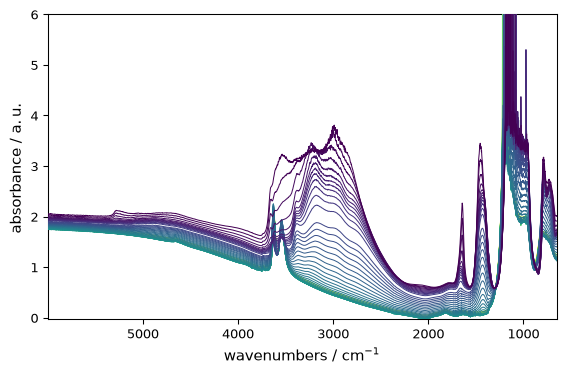
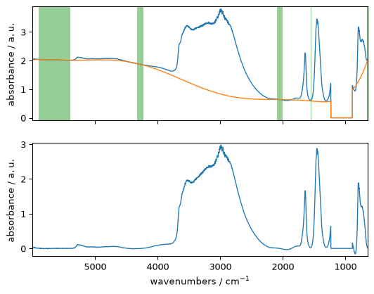
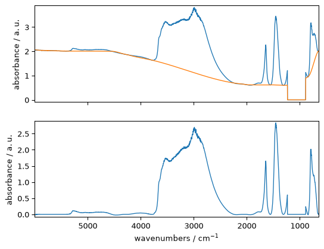
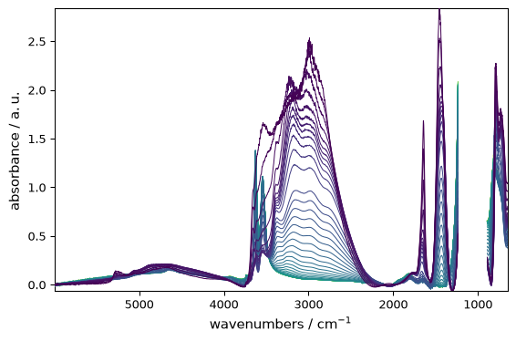
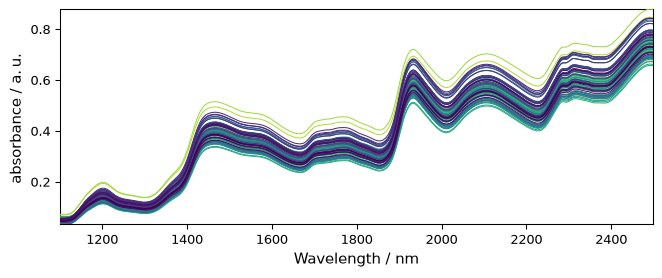
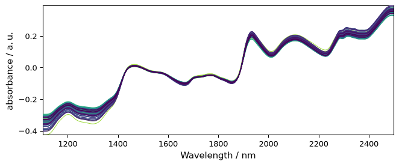
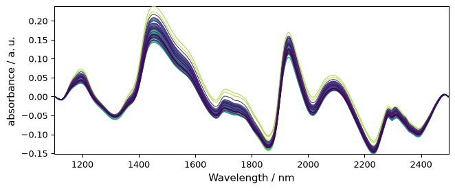
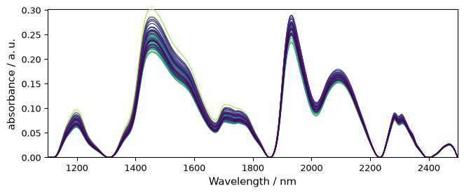

Baseline corrections
This tutorial shows how to perform baseline correction with SpectroChemPy using the Baseline class processor, which provides access to all implemented correction models with a high degree of flexibility, or using equivalent SpectroChemPy API or NDDataset methods for more direct one-step corrections.
As a prerequisite, the user is expected to have read the Import and Import IR tutorials.
We first import spectrochempy
[1]:
import spectrochempy as scp
Then we load an FTIR series of spectra on which we will demonstrate the processor capabilities.
[2]:
# loading
X = scp.read("irdata/nh4y-activation.spg")
# plot the spectra
_ = X.plot()

The Baseline processor
The Baseline class processor provides several algorithms (models) for baseline determination.
detrend: Remove polynomial trend along a dimension from dataset.polynomial: Perform a polynomial interpolation on predetermined regions.asls: Perform an Asymmetric Least Squares Smoothing baseline correction.snip: Perform a Simple Non-Iterative Peak (SNIP) detection algorithm.rubberband: Perform a Rubberband baseline correction.
How it works?
Basically, determining a correct baseline belongs to the decomposition-type methods (see Analysis):
The sequence of command is thus quite similar:
Initialize an instance of the processor and set the model parameters.
Fit the model on a given dataset to extract a
baseline.Transform the original spectra by subtracting the determined baseline.
Example
Let’s fit a simple rubberband correction model. This is currently the only fully automatic model in SpectroChemPy, with no parameter to tune.
[3]:
# instance initialization and model selection
blc = scp.Baseline()
blc.model = "rubberband"
# model can also be passed as a parameter
blc = scp.Baseline(model="rubberband")
# fit the model on the first spectra in X (index:0)
_ = blc.fit(X[0])
# get the new dataset with the baseline subtracted
X1 = blc.transform()
# plot X, X1 and the baseline using the processor plot method
_ = blc.plot()

One can also use the property corrected instead of the method transform(), both giving equivalent results.
[4]:
X1 = blc.corrected
Of course, we can also apply the model sequentially to the complete series.
[5]:
# fit the model on the full X series
_ = blc.fit(X)
# get the new dataset with the baseline subtracted
X2 = blc.transform()
# plot the baseline corrected series of spectra
The baseline models implemented in SpectroChemPy are able to handle missing data.
For instance, let’s consider masking the saturated region of the spectra.
[6]:
X[:, 891.0:1234.0] = scp.MASKED
_ = X.plot()

Fitting the baseline is done transparently, and the masked region is preserved on both the computed baseline and the corrected dataset.
[7]:
_ = blc.fit(X)
X3 = blc.transform()
_ = blc.plot()

[8]:
X3[:, 891.0:1234.0].mask.all(), blc.baseline[:, 891.0:1234.0].mask.all()
[8]:
(np.True_, np.True_)
Overview of the other models
Polynomial
With this model, a polynomial is fitted using coordinate ranges that are considered to belong to the baseline.
The first step is then to select the various regions that we expect to belong to the baseline.
Then the degree of the polynomial is set (using the
orderparameter). A special case is encountered iforderis set to"pchip". In this case, a piecewise cubic Hermite interpolation is performed in place of the classic polynomial interpolation.
Range selection
Each spectral range is defined by a list of two values indicating the limits of the spectral ranges, e.g. [4500., 3500.] to select the 4500-3500 cm\(^{-1}\) range. Note that the ordering has no importance and using [3500.0, 4500.] would lead to exactly the same result. It is also possible to formally pick a single wavenumber 3750..
[9]:
ranges = (
[5900.0, 5400.0],
4550.0,
[4230.0, 4330.0],
3780,
[2100.0, 2000.0],
[1550.0, 1555.0],
1305.0,
840.0,
)
Polynomial of degree: order
In this case, the base methods used for the interpolation are those of the polynomial module of NumPy, in particular the numpy.polynomial.polynomial.polyfit() method.
[10]:
# set the model
blc.model = "polynomial"
# set the polynomial order
blc.order = 7
# set the ranges
blc.ranges = ranges
# fit the model on the first spectra X[0]
_ = blc.fit(X[0])
# get and plot the corrected dataset with regions displayed
X4 = blc.transform()
_ = blc.plot(show_regions=True)

[11]:
blc.used_ranges
[11]:
[[np.float64(649.904), np.float64(651.832)],
[840.0, 840.0],
[1305.0, 1305.0],
[1550.0, 1555.0],
[2000.0, 2100.0],
[3780.0, 3780.0],
[4230.0, 4330.0],
[4550.0, 4550.0],
[5400.0, 5900.0],
[np.float64(5997.627), np.float64(5999.556)]]
Polynomial and pchip interpolation
An interpolation using cubic Hermite spline interpolation can be used: order='pchip' (pchip stands for Piecewise Cubic Hermite Interpolating Polynomial).
This option triggers the use of scipy.interpolate.PchipInterpolator() to which we refer the interested readers.
[12]:
# set the polynomial order to 'pchip'
blc.order = "pchip"
# fit the model on the first spectra X[0]
_ = blc.fit(X[0])
# get and plot the corrected dataset
X5 = blc.transform()
_ = blc.plot()

AsLS : Asymmetric Least Squares Smoothing baseline correction
Example:
[13]:
blc.model = "asls"
blc.lamb = 10**9
blc.asymmetry = 0.002
_ = blc.fit(X)
X6 = blc.transform()
_ = X6.plot()
WARNING | (SparseEfficiencyWarning) spsolve requires A be CSC or CSR matrix format

SNIP : Perform a Simple Non-Iterative Peak (SNIP) detection algorithm
Example:
[14]:
blc.model = "snip"
blc.snip_width = 200
_ = blc.fit(X)
X7 = blc.transform()
_ = X7.plot()

Multivariate approach
In the previous example, we fitted the model sequentially on all spectra.
Another useful approach is multivariate, where SVD/PCA or NMF is used to perform a dimensionality reduction into principal components (eigenvectors), followed by model fitting on each of these components. This obviously requires a 2D dataset, so it is not applicable to single spectra.
The multivariate option is useful when the signal-to-noise ratio is low and/or when baseline changes in different regions of the spectrum are correlated. It consists of (i) modeling the baseline regions by principal component analysis (PCA), (ii) interpolating the loadings of the first principal components over the whole spectrum, and (iii) modeling the baselines of the spectra from the product of the PCA scores and the interpolated loadings. For details, see Vilmin et al., Analytica Chimica
Acta 891 (2015).
If this option is selected, the user must also set the n_components parameter, i.e. the number of principal components used to model the baseline. In a sense, this parameter has the same role as the order parameter, except that it affects how the baseline fits the selected regions on both dimensions: wavelength and acquisition time. In particular, a large value of n_components will lead to overfitting of the baseline variation with time, while a value that is too small may fail to
detect a main component underlying the baseline variation over time. Typical optimal values are n_components=2 or n_components=3.
Let’s demonstrate this on the previously used dataset.
[15]:
# set to multivariate (SVD by default)
blc.multivariate = True
# set the model
blc.model = "polynomial"
blc.order = 10
# Set the number of components
blc.n_components = 3
# Fit the model on X
_ = blc.fit(X)
# get the corrected dataset
X8 = blc.transform()
# plot the result
_ = X8.plot()

Finally, in all the examples shown above, we used the same Baseline instance. It may become difficult to remember which settings have been applied, and this may affect subsequent outputs. To inspect the current state, use the params method. This lists all current parameters.
[16]:
blc.params()
[16]:
{'asymmetry': 0.002,
'include_limits': True,
'lamb': 1000000000.0,
'lls': True,
'max_iter': 50,
'model': 'polynomial',
'multivariate': True,
'n_components': 3,
'order': 10,
'ranges': [[np.float64(649.904), np.float64(651.832)],
[840.0, 840.0],
[1305.0, 1305.0],
[1550.0, 1555.0],
[2000.0, 2100.0],
[3780.0, 3780.0],
[4230.0, 4330.0],
[4550.0, 4550.0],
[5400.0, 5900.0],
[np.float64(5997.627), np.float64(5999.556)]],
'snip_width': 200,
'tol': 0.001}
Baseline correction using NDDataset or API methods
The Baseline processor is very flexible, but it can also be useful to use simpler one-step methods to compute a baseline. This is the role of the methods described below, which call the Baseline processor transparently.
As an example, we can now use a dataset consisting of 80 samples of corn measured on a NIR spectrometer. This dataset (and others) can be loaded from http://www.eigenvector.com.
[17]:
A = scp.read("http://www.eigenvector.com/data/Corn/corn.mat", merge=False)[4]
INFO | The mat file contains an array of strings named 'information' which will not be converted to NDDataset
Add some labels for easier reading of the data axis.
[18]:
A.title = "absorbance"
A.units = "a.u."
A.x.title = "Wavelength"
A.x.units = "nm"
Now plot the original dataset A:
[19]:
prefs = scp.preferences
prefs.figure.figsize = (7, 3)
prefs.colormap = "tab20"
_ = A.plot()

Detrending
It is quite clear that this spectrum series has an increasing trend with both a vertical shift and a drift.
The detrend method can help remove such trends. Note that, although we have not discussed it yet, the model is also available in the Baseline processor with model="detrend".
Constant trend
When the trend is simply a shift, one can subtract the mean absorbance from each spectrum.
[20]:
A1 = A.detrend(order="constant") # Here we use a NDDataset method
_ = A1.plot()

Linear trend
But here the trend is clearly closer to a linear trend. So we can use a linear correction with A.detrend(order="linear") or simply A.detrend() as “linear” is the default.
[21]:
A2 = scp.detrend(
A
) # Here we use the API method (this is fully equivalent to the NDDataset method)
_ = A2.plot()

Polynomial trend
If a higher degree of polynomial is necessary, it is possible to use a nonnegative integer scalar to define order (degree). Note that for degree 2 and 3, the “quadratic” and “cubic” keywords are also available to define 2 and 3-degree of polynomial.
[22]:
A3 = A.detrend(order="quadratic") # one can also use `order=2`
_ = A3.plot()

Detrend independently on several data segment
For this we must define a vector (bp) which contains the location of the break-points, which determine the limits of each segments.
For example, let’s try on a single spectrum for clarity:
[23]:
# without breakpoint
R = A[0]
R1 = R.detrend()
# plots
_ = R.plot(label="original")
_ = R1.plot(label="detrended", clear=False)
ax = (R - R1).plot(label="trend", clear=False, cmap=None, color="red", ls=":")
ax.legend(loc="upper left")
_ = ax.set_ylim([-0.3, 0.8])

Note
we use float number to define breakpoint as coordinate. Integer number would mean that we use indice starting at 0 (not the same thing!). in this case, indice 1856 does not exist as the size of the x axis is 700.
[24]:
# with breakpoints
bp = [1300.0, 1856.0] # warning must be float to set location, in int for indices
R2 = R.detrend(breakpoints=bp)
_ = R.plot()
_ = R2.plot(clear=False)
ax = (R - R2).plot(clear=False, cmap=None, color="red", ls=":")
_ = ax.set_ylim([-0.3, 0.8])

basc
Make a baseline correction using the Baseline class.
Examples:
Automatic linear baseline correction
When the baseline to remove is a simple linear correction, one can use basc without entering any parameter. This performs an automatic linear baseline correction. This is close to detrend(order=1), except that the linear baseline is fitted on the the spectra limit to fit the baseline. This is useful when the spectra limits are signal free.
[25]:
Aa = A.basc()
_ = Aa.plot() # range are automatically set to the start and end of the spectra, model='polynomial', order='linear'

All parameters of Baseline can be used in basc. It is thus probably quite convenient if one wants to write shorter code.
Rubberband
Method such as ruberband, asls and snip can be called directly.
Example:
[26]:
Ab = scp.rubberband(A)
_ = Ab.plot()

Code snippet for ‘advanced’ baseline correction
The following code in which the user can change any of the parameters and look at the changes after re-running the cell:
[27]:
# Create a baseline instance and give it a name (here basc)
# ---------------------------------------------------------
basc = scp.Baseline()
# user defined parameters
# -----------------------
basc.ranges = ( # ranges can be pair or single values
[5900.0, 5400.0],
[4000.0, 4500.0],
4550.0,
[2100.0, 2000.0],
[1550.0, 1555.0],
[1250.0, 1300.0],
[800.0, 850.0],
)
basc.interpolation = "pchip" # choose 'polynomial' or 'pchip'
basc.order = 5 # only used for 'polynomial'
basc.method = "sequential" # choose 'sequential' or 'multivariate'
basc.n_components = 3 # only used for 'multivariate'
# fit baseline, plot original and corrected NDDatasets and ranges
# ---------------------------------------------------------------
_ = basc.fit(X)
Xc = basc.corrected
ax = basc.plot(show_regions=True)

Exercises
basic:
write commands to subtract (i) the first spectrum from a dataset and (ii) the mean spectrum from a dataset
write a code to correct the baseline of the last 10 spectra of the above dataset in the 4000-3500 cm\(^{-1}\) range
intermediate:
what would be the parameters to use in ‘advanced’ baseline correction to mimic ‘detrend’ ? Write a code to check your answer.
advanced:
simulate noisy spectra with baseline drifts and compare the performances of
multivariatevssequentialmethods